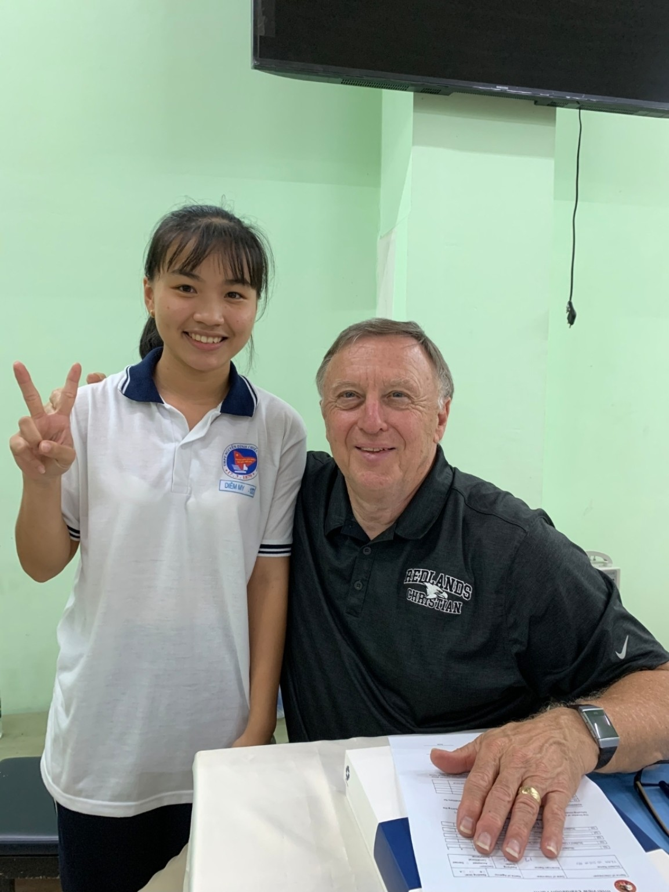
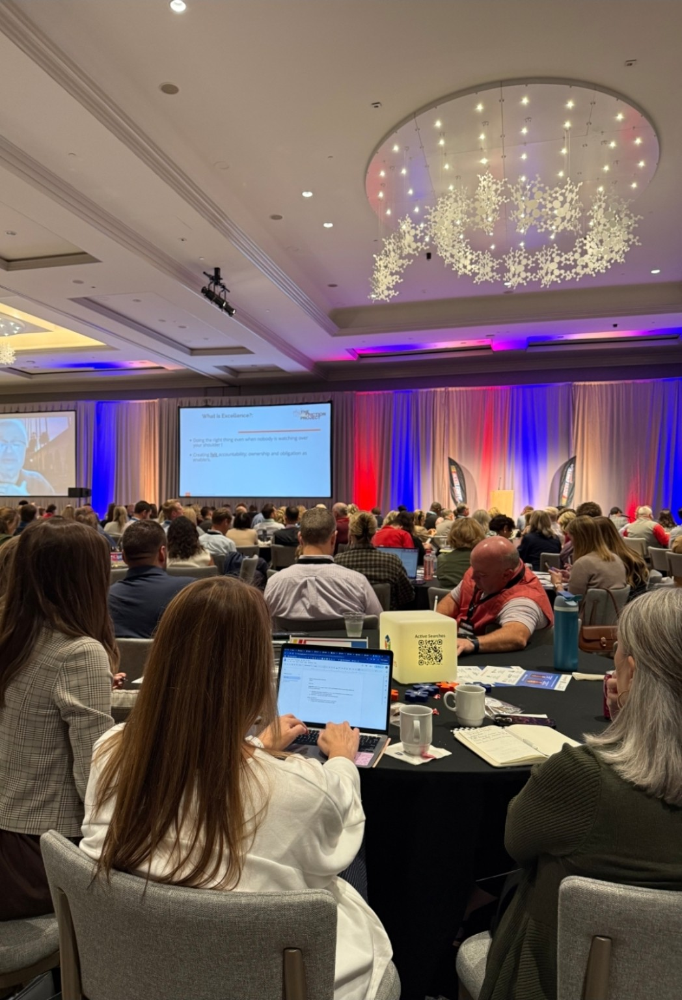
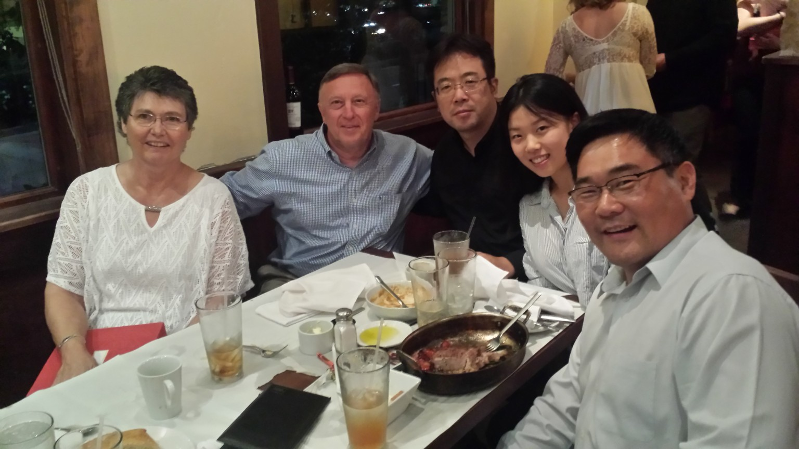
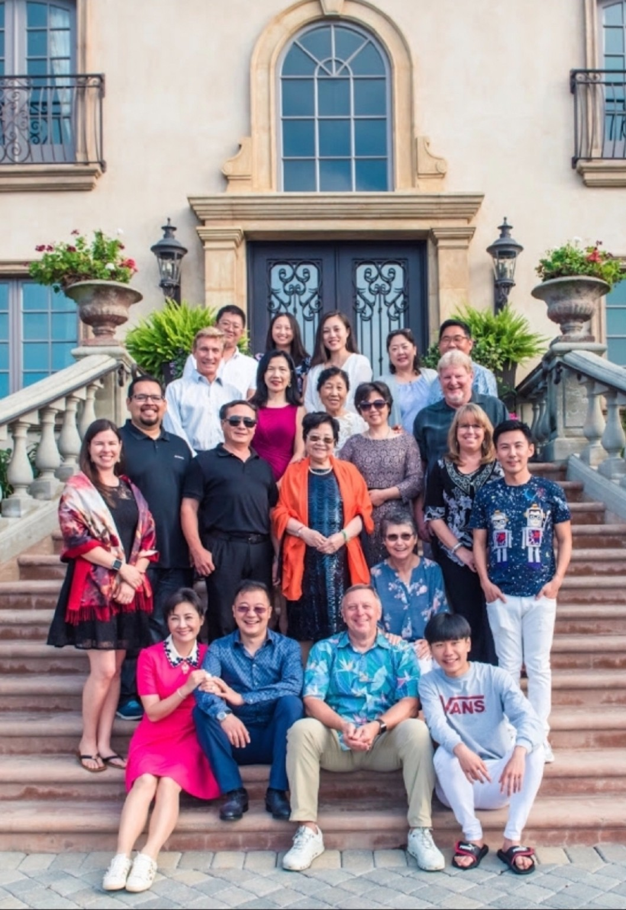

董事会发展与治理
建立健康的董事会与机构负责人关系，明确使命，并完善指导机构工作的政策。
- 董事会工作坊与职责明确
- 政策制定与实施
- 校长评估流程
基督教中小学 ✦ 教会 ✦ 基督教事工机构
01 / 我们的使命
卓越始于清晰的呼召，以及将呼召付诸实践的领导力。
Dan Cole Consulting 为在各项工作中追求卓越的基督教机构提供咨询。我们支持董事会、机构负责人及其团队，帮助他们实现所肩负的使命。
面对文化变迁与复杂决策，我们帮助领导者以基督教信念、实践智慧和清晰方向，应对眼前的挑战。
02 / 咨询领域
为影响机构未来的重要决策提供有针对性的支持。
建立健康的董事会与机构负责人关系，明确使命，并完善指导机构工作的政策。
将共同愿景转化为近期及长远发展的切实方向。
制定财务战略与政策，支持机构稳定运营和长期可持续发展。
清晰传达学校的独特价值，制定支持招生的市场推广策略。
提升现有筹款工作的成效，并制定推动机构使命的新策略。
协助校长培养团队，并制定有效的学生管理方法。
跨越国界的使命
Dan Cole Consulting 为美国、韩国、中国、日本及其他国家的众多基督教学校提供支持，帮助领导者夯实学校基础，推进基督教教育使命。


走进教育现场
有意义的工作始于倾听。透过对话、校园访问与跨文化交流，走近人与教育的真实连接。
围桌而坐，分享对教育的关切。
倾听学生，与学校社群建立联系。
在相聚中增进理解，在交流中建立联系。
03 / 创始人愿景
DAN COLE CONSULTING我盼望学校、教会和事工机构在智慧的领导下，以清晰的使命凝聚一心，并因忠心的管家精神而更加稳固。我的使命是与这些领导者同行：认真聆听，协助厘清复杂决策，将坚定信念化为有方向的行动。
培养领导者，就是支持他们所服务的学生、家庭与社区。这正是我希望共同创造的持久影响：帮助机构忠于基督，同时装备下一代去领导、去服事。


用心同行的承诺
每所机构的背后，都有人肩负着重要责任。我们的工作以支持他们为核心，关注他们的使命、挑战以及所服务的群体。
从董事会到课堂，我们的目标始终如一：帮助基督教机构忠心地领导，更好地服事。
回顾我们的使命 ↗忠心的领导力。持久的影响力。
让我们谈谈您的学校、机构，以及未来的工作。
通过邮件联系 ↗djcole3@gmail.com